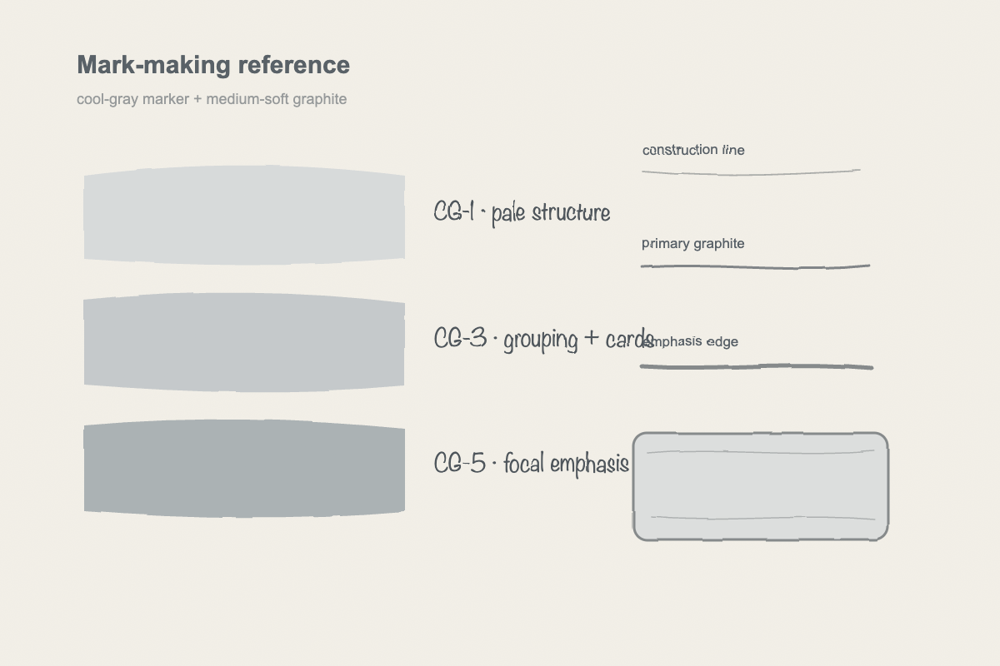

Active work
One materials-only sheet grounded in documented real alcohol-marker and graphite evidence, with a matched primary stroke family and separately labeled supporting boundaries.
Suspended work
No desktop screens, mobile screens, cards, dashboards, devices, annotations, installation, or release.
Rejected reference
Flat digital marks
This image is evidence of what to reject, not what to imitate.

Missing evidence
Physical behaviors
- Chisel direction and width
- Longitudinal streaking
- Single-pass translucency
- Overlap buildup
- Localized pooling
- Capillary feathering
- Pass and blend differences
- Graphite interaction
- Bleeding boundary
Next artifact
Researched reference candidate
Use Copic's fixed-camera marker demonstrations as the primary matched family. Use separate documented sources only for cool-gray layering, graphite interaction, and paper-bleeding boundaries, with each role labeled.
Approval gate
Explicit user approval required
Material fidelity is evaluated before color accuracy. Screen work remains suspended until the stroke-level sheet is explicitly approved and a new forward test passes.